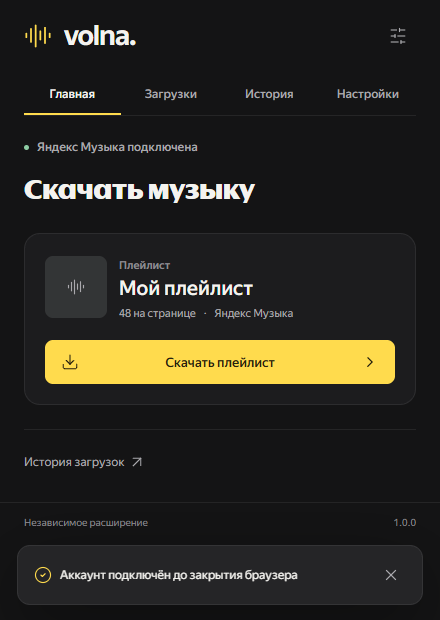
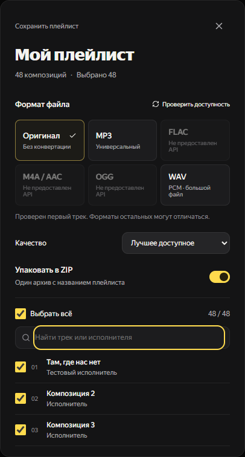
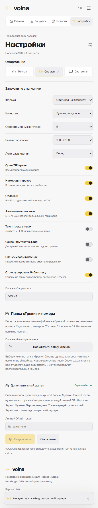
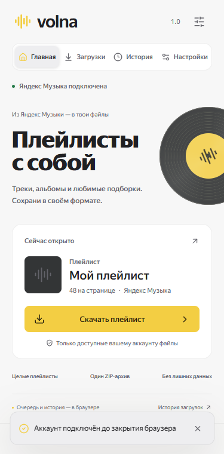

Отдельная галерея интерфейса: настоящий YS Text и YS Music Headline, графитовые поверхности и жёлтый акцент Яндекс Музыки.




YS Music Headline — заголовки. YS Text — интерфейс, списки, статусы. Файлы включены локально.
Изображения сняты с работающего интерфейса на тестовой коллекции. Это отдельная статическая дизайн-галерея; рабочее расширение находится в папке dist. В Figma нет корпоративных YS-шрифтов, поэтому там явно отмечена временная системная замена.